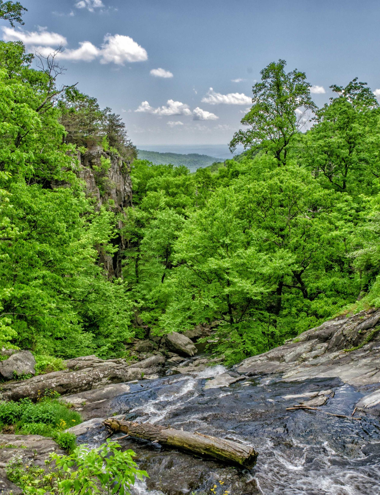

Feature
The Return of the Urban Forest
For most of the twentieth century a tree in a city was decoration. Today it is infrastructure. Planners now price a mature street tree the way they price a storm drain or a length of pavement, because it does measurable work: it cools the air, soaks up rainfall, filters particulates, and quietly lowers the energy a neighbourhood burns through in summer.
The shift is partly climatic and partly arithmetic. A dense canopy can hold surface temperatures several degrees below a bare street on a hot afternoon, which turns directly into fewer hours of air-conditioning and a flatter evening demand curve on the grid.

Mixed broadleaf canopy over a slow river · Jerry Adney / Unsplash
Water is the other half of the story. A single established tree intercepts thousands of litres of rainfall a year, slowing it before it ever reaches an overwhelmed drain. Multiply that across a planted boulevard and the city has, in effect, built a soft reservoir that also happens to be beautiful.
“A street tree is the cheapest piece of climate infrastructure a city will ever install — and the only one that grows more valuable every year.”
None of this requires heroics. The cities making the fastest progress are the ones that simply stopped paving over their verges, let a few corners grow wild, and planted species suited to the street rather than the catalogue. The forest, it turns out, is happy to come back on its own — it just needs to be let in.
What remains is maintenance and patience. A canopy is a thirty-year project measured in seasons, not quarters, and the neighbourhoods that commit early are the ones that will be noticeably cooler, quieter, and cheaper to run by the time the next generation inherits them.